Wearable RFID Reader for Object Tracking and Interactions
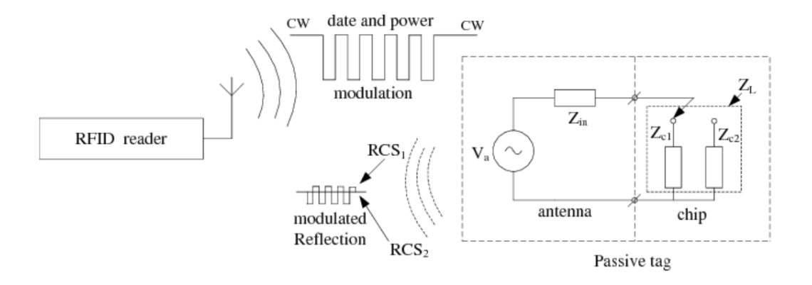
Wireless Backscatter
Used by the reader to communicate with a passive tag wirelessly. This is the basis for object recognition
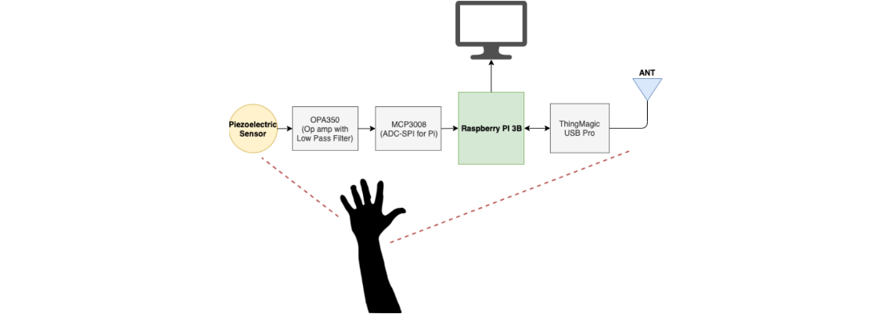
Block Diagram
ThingMagic RFID Reader and antenna used for object recognition. Piezo sensor and op amp circuit used for touch detection.
Physical Design
Protective casing holds the Rasperry Pi. Piezoelectric is placed below the case to easily detect vibrations from touch.
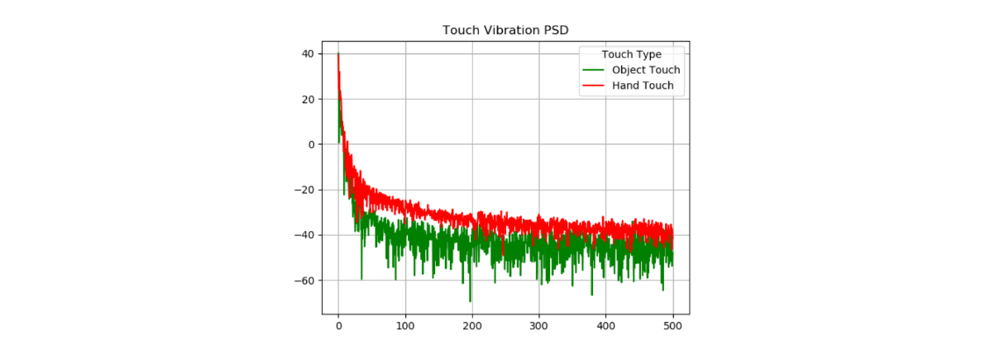
Power Spectral Density from Piezo Vibrations
Data from raw piezo sensor readings are converted via FFT. This can be used to distinguish object vs hand touch.
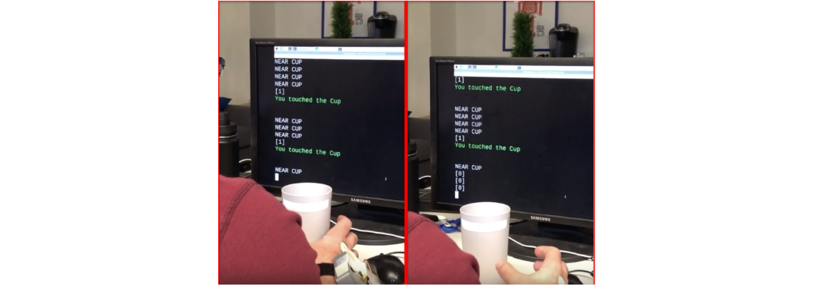
Evaluation
PSD results were used to generate a ML algorithm. This with RFID detection shows that the wearable reader can identify touched objects at a 90% accuracy.
An important part of developing VR (Virtual Reality) and AR (Augmented reality) technology is the incorporation of everyday object identification and interaction.
One way that this can be done is to equip objects with IMUs and sensors for tracing interactions. However, deploying such sensors to hundreds of objects would become expensive
and make objects bulkier.
A cheaper solution would be to use RFID tags, which are lightweight inexpensive stickers that can be programmed with unique IDs.
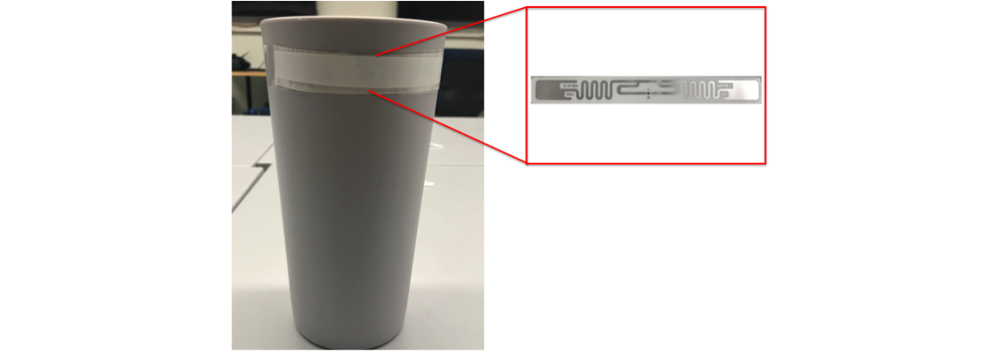
Then, stationary RFID readers are used with those tagged objects to determine the object's ID and relative location over time.
However, this solution would not work when attempting to solve problems with object interactions in complex environments due to the following:
If the tagged object goes out of range, the reader can no longer detect how the object is moving
If the tagged object gets blocked by another object (interference), the reader can no longer accurately detect
A stationary reader can only determine how an object moves, not if it's been interacted by a user.
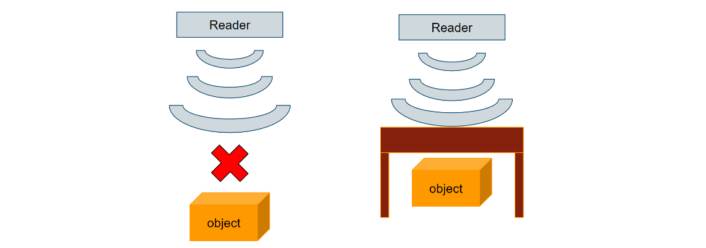
Therefore, this project implements a low cost, portable RFID reader with a vibration detection circuit to properly identify and determine
touch interactions with a tagged object.
Design Concept
The piezoelectric sensor (bottom left) was used to capture the raw vibrations from the hand after touching an object. The low pass filter and op amp were then
used to capture and amplify the signals of interest, before sending that data to the raspberry pi.
On the other side, the antenna (bottom center) captured signals received by the RFID tag and sent those signals to the
ThingMagic USB Pro (bottom right), which decoded the data and sent the resulting object ID to the raspberry pi.
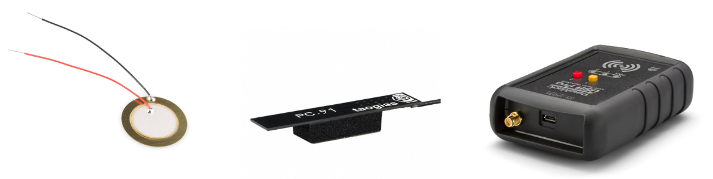
RFID Detection
The RFID reader detects communicates with tags through a process known as Wireless Backscatter
In this process, the reader sends out a carrier wave in all directions. Each tag contains a passive circuit which harnesses the power from the reader to toggle
a switch. By toggling this switch, the tag can choose how much of the carrier wave is reflected. This creates the process known as modulation, where the
tag adds information by modifying the carrier wave. The reader (in this case ThingMagic USB Pro) decodes the modulated waveform.
The antenna we chose is an omnidirectional antenna, which means the antenna transmits RF signals equally in all directions. The PI communicates with
the ThingMagic Pro via USB, and can send commands to increase the power output to the antenna. This means we can increase the radius of transmitted power,
and potentially capture more tags.
Therefore, we implemented an RFID range variation algorithm to decrease the power to only detect one tag, or increase the power until we detect only one tag.
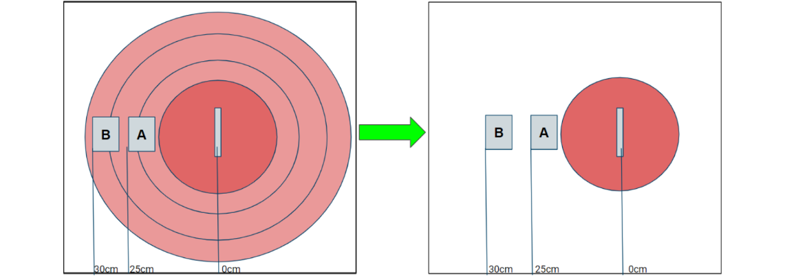
Vibration Sensing
Since RFID is only good for object detection, we needed an approach to handle interaction without modifying the tagged object. For this project, we
adopted the concepts used in VibSense, which takes advantage of a piezoelectric sensor to capture
vibrations from a touched object.
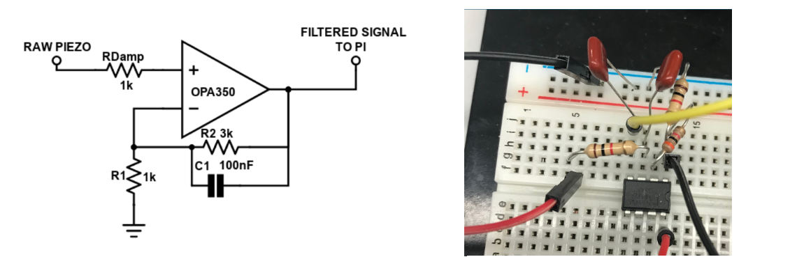
The signals from the piezoelectric sensor are passed through a first-order low pass active filter with a cut-off frequency of 25kHz. The circuit was tested
on an oscilloscope, and we determined that this was enough to visually see a difference between touching an object and touching something else (a surface or hand)
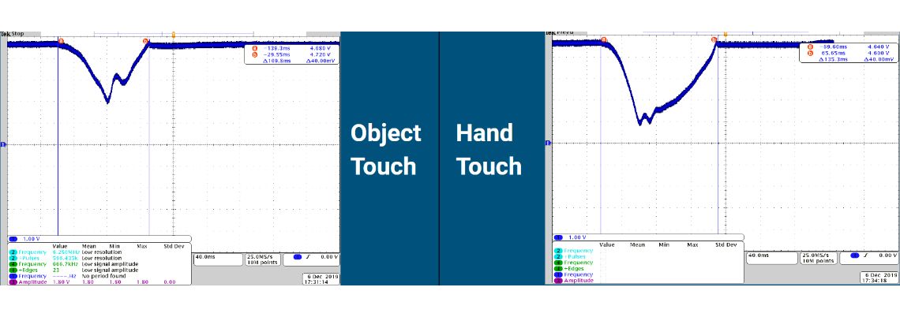
We intended on using a machine learning algorithm to properly distinguish between an object and non-object touch. Before this, we used the process of
feature extraction, which involved converting the signals to the frequency domain via FFT where each frequency is a feature for the ML algorithm.
We noticed a strong difference when comparing the amplitudes of each frequency component (shown below) between the object touch and false touch.
This meant that a classifier should be able to distinguish these two as well.
After trying multiple machine learning models, we found that Support Vector Machine (SVM) with Radial Basis Function (RBF) classified between an object touch
and a false touch with the highest accuracy.
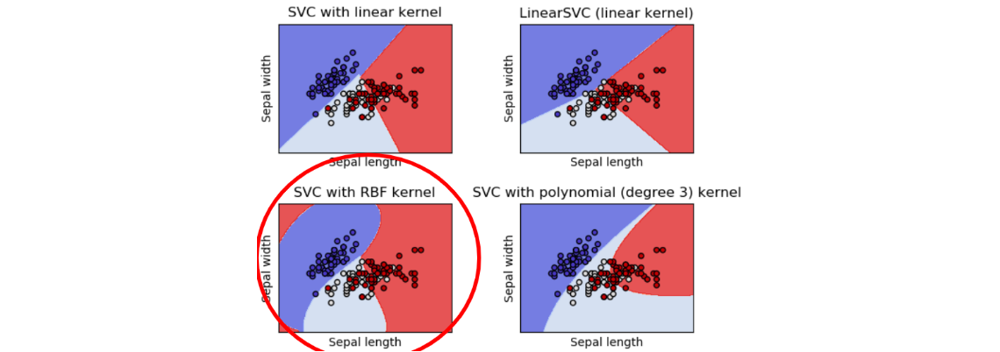
Physical Implementation
The case was 3D printed to fit the Raspberry Pi and contain slots to fit a wrist band. The piezoelectric sensor was placed below the case, so that it could
detect vibrations coming from the hand when it touched an object. The antenna was placed on top of the case, so that it could detect tagged objects without
any object interference.
Future work on this project would include desiging a PCB to better fit the Pi and ThingMagic USB Pro in the case as well as a proper antenna mount.
Performance
After implementing the design and adding the machine learning algorithm, we tested out the embedded system and documented the accuracy of object identification
and touch detection (shown after each video).
Single Object Touch
Accuracy: 92%
Two Object Touch
Accuracy: 96%
Touching on Different Surfaces
Accuracy: 92%
Distinguishing Objects Close Together
Accuracy: 95%
Also, to highlight the correctness and importance of RFID idenfitication, we attached the design to a cane to mimic a metal detector, and used it to see if
we could find hidden tagged objects in the room. The video below demonstrates how RFID can be used to create a low power and cost-effective metal detector.
Acknowledgements
Special thanks to Youssef Tobah, who worked on this project with me, as well as Alanson Sample and the ISC Lab
for their assistance in the RFID technology.